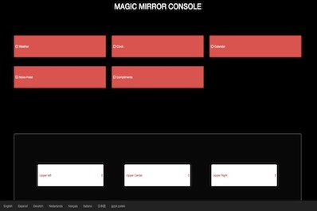

Magic Mirror Console
CrimsonHacks - Spring 2017

Inspiration
We were inspired to do this because we went through the process of setting up a smart mirror many times through
the command line, so we wanted to create a more easily accessible user interface so more people can make their
own Magic Mirrors.
What it does
Magic Mirror Console provides a user friendly interface to show and hide modules. It can also translate the
modules to different languages.
How we built it
We built our own custom module for Magic Mirror and ran a web age on localhost which allowed us to send API
calls to localhost and trigger events in the Magic Mirror environment.